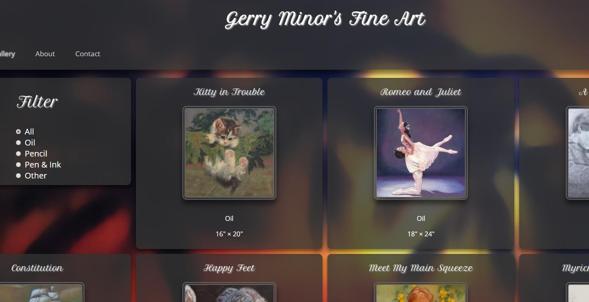

My grandma wanted a way to share all of her drawings and paintings with her friends. I figured it was a good project to get real world experience working with a client. This project has improved my skills working with HTML, CSS, and JavaScript.
This was my first time creating an AI for a game. I wrote the AI in JavaScript using depth-first search. It was very difficult to wrap my head around how AI's and DFS works, but I finally got it to function properly. I still have a lot to learn and understand. Have fun trying to beat it! ;)
No description at the moment.
No description at the moment. The webpage is also a work in progress.